Connect To EC2 and Download AWS CLI
Check Connection
There are several ways to connect to EC2 instances. You can follow the instructions to connect to EC2 using PuTTY. In this lab, we will use MobaXterm to establish the connection.
- Download MobaXterm
- Click on GET MOBAXTERM NOW
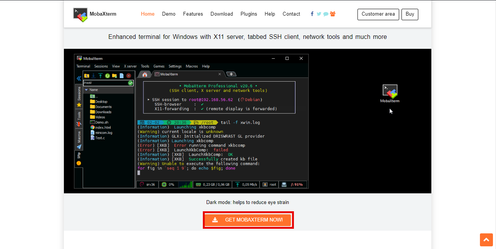
- In the interface:
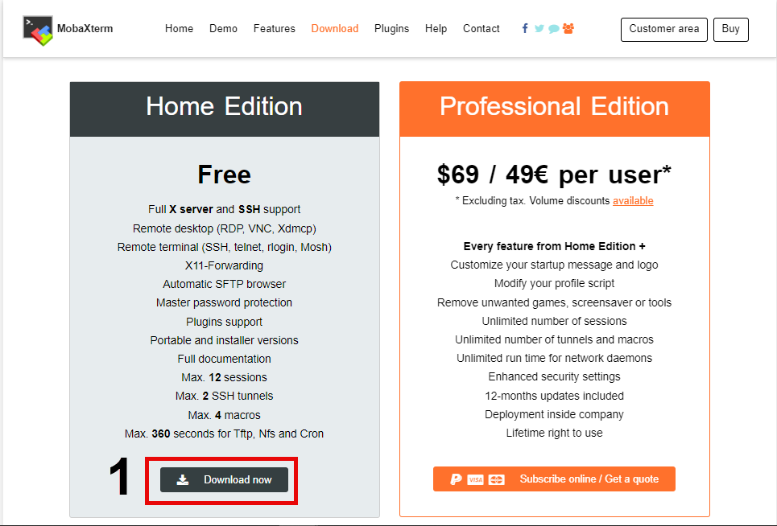
- Using MobaXterm
- After downloading MobaXterm, extract and open it.
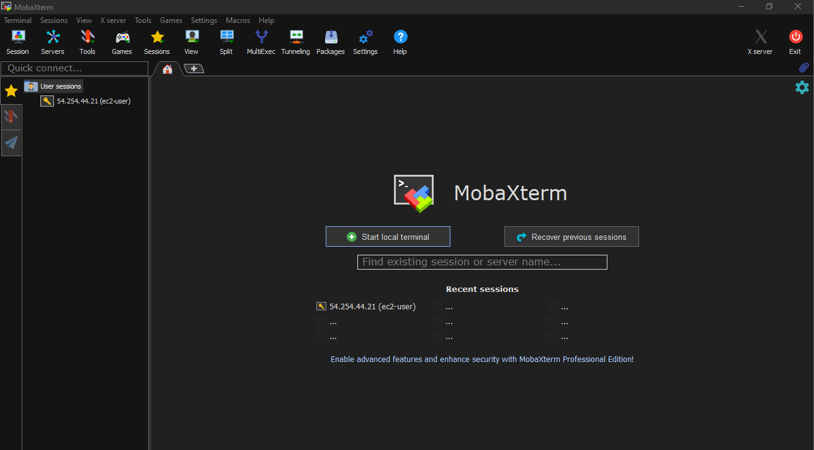
- Access EC2 interface:
- Choose EC2 Public
- Copy the Public IPv4 address
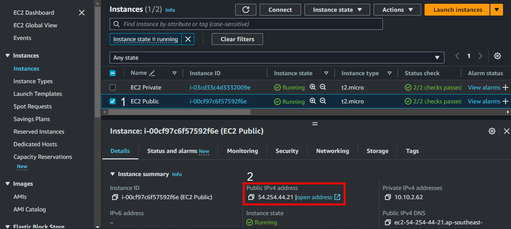
- Open MobaXterm
- Choose Session
- Then click on SSH
- Enter the Remote host (Public IPv4 address)
- Specify the username as
ec2-user
- Choose the Use private key option and provide the path to the workshop-keypair.pem file created and downloaded during EC2 instance creation.
- Then click on OK
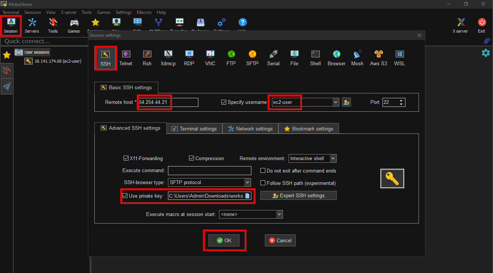
- Successful connection.
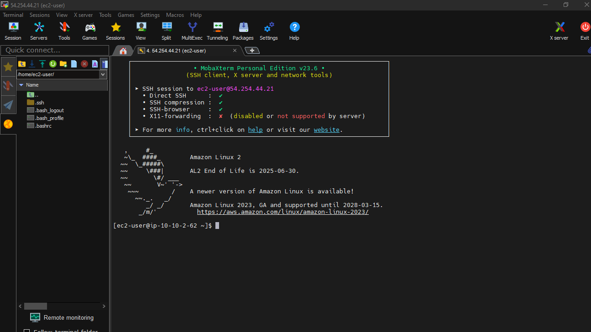
- Execute the following command to test the internet connection of the EC2 Public instance:
ping amazon.com -c5
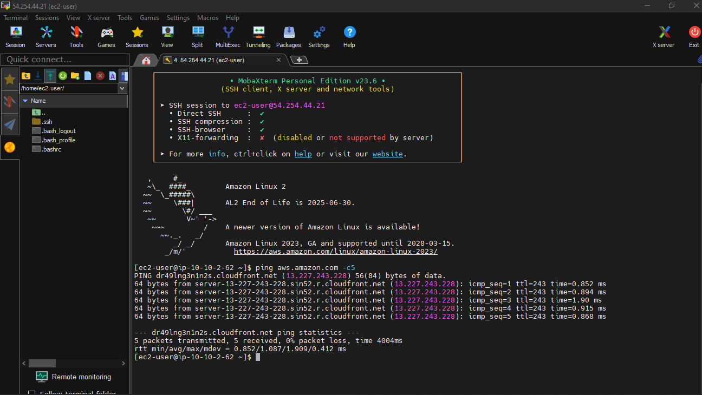
-
In EC2 Public, to install the AWS CLI, run the following commands:
curl "https://awscli.amazonaws.com/awscli-exe-linux-x86_64.zip" -o "awscliv2.zip"
-
If the line unzip awscliv2.zip appears, press Enter.
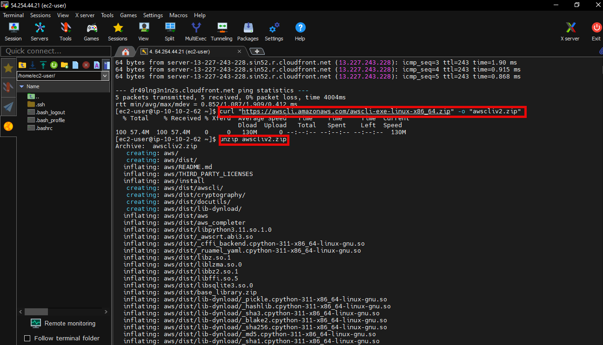
- Run the final command:
sudo ./aws/install
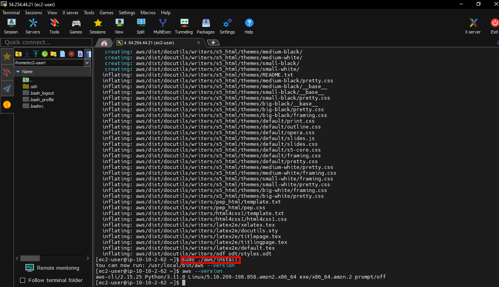
- Confirm the installation with the following command:
aws --version
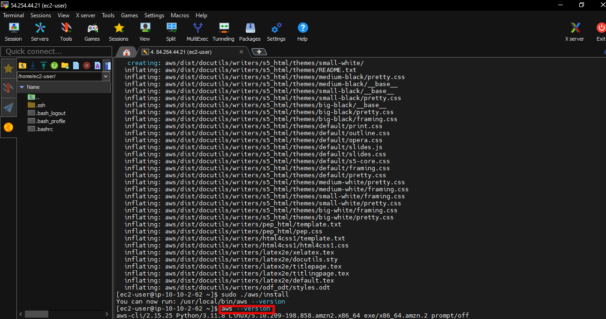
-
If the aws command cannot be found, you might need to restart your terminal or follow the troubleshooting in Troubleshoot AWS CLI errors.
-
You have successfully download AWS CLI on the EC2 instances in the public subnet that can connect to the internet.
- Now, we use
aws s3 ls to list all user owned buckets
-
After running the command aws s3 ls, we encountered an error: Unable to locate credentials.
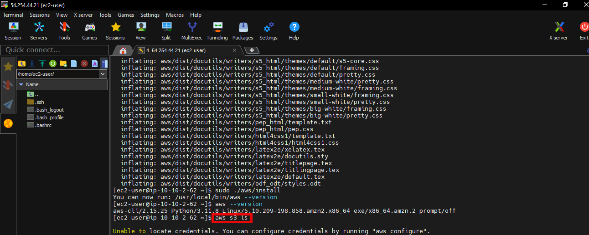
Connect to the EC2 Private Server and Check Internet Connection
-
Access to EC2
- Select Instances
- Select EC2 Private
- Select Details
- Copy Private IPv4 addresses
-
Perform a ping test to the EC2 Private’s private IP address to test the connection from the EC2 Public server to the EC2 Private server. Use the following command: ping 10.10.3.124
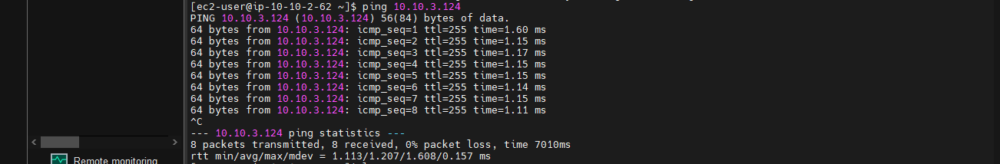
- EC2 Private will not have a public IP address because we are not assigning this server a public IP. To be able to ssh into EC2 Private, we will make an ssh connection from EC2 Public through EC2 Private private IP address.
- Download the pscp tool to the same folder containing the workshop-keypair.ppk file to copy the workshop-keypair.pem file from our computer to EC2 Public
- We use puttygen.exe to generate key
- Select Load
- Choose workshop-keypair
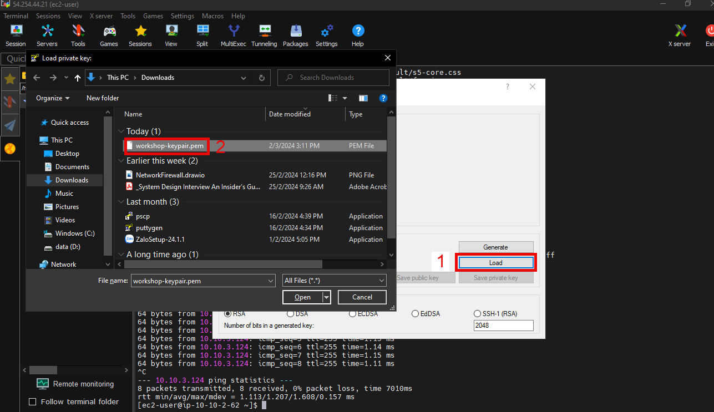
- Select OK
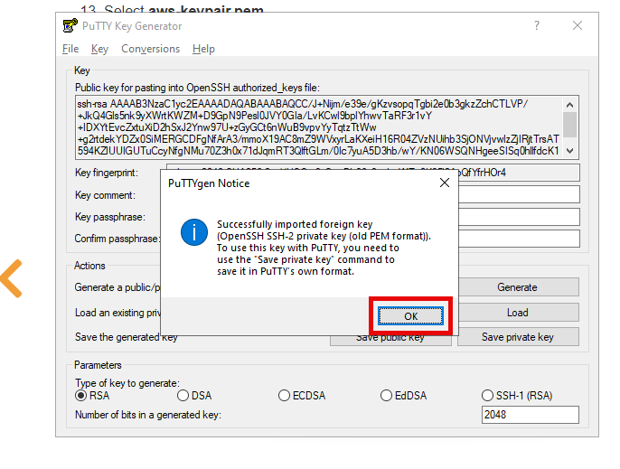
- Complete the generation key.
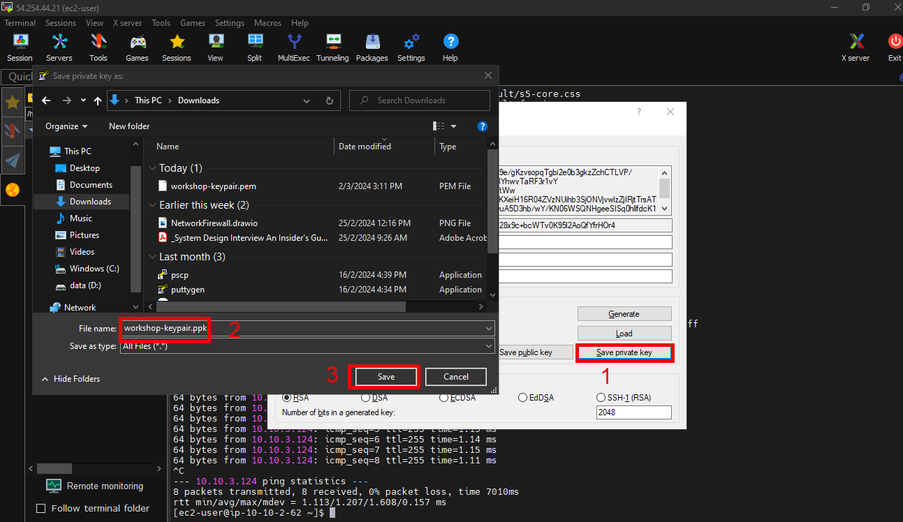
- Launch Command Prompt. Change the path to the folder you just downloaded pscp. Run the command below to upload the workshop-keypair.pem file to the /home/ec2-user/ directory of the EC2 Public server.
- You will need to replace the public IP address of EC2 Public parameter before running the command.
pscp -i workshop-keypair.ppk workshop-keypair.pem ec2-user@<EC2 PUBLIC public IP address>:/home/ec2-user/
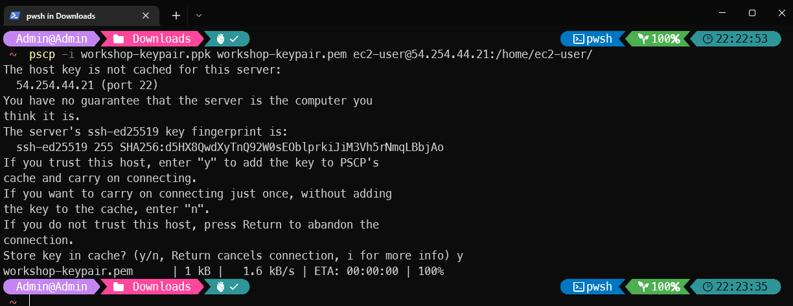
- Return to the EC2 connection interface. Make sure you copy the aws-keypair.pem file to the EC2 Public server, we execute the command:
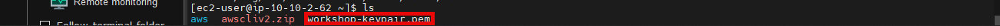
- Update the permissions for the workshop-keypair.pem file by running the chmod 400 aws-keypair.pem command. AWS requires the key pair file to be restricted before it can be used to connect to the EC2 server.
-
chmod 400 workshop-keypair.pem
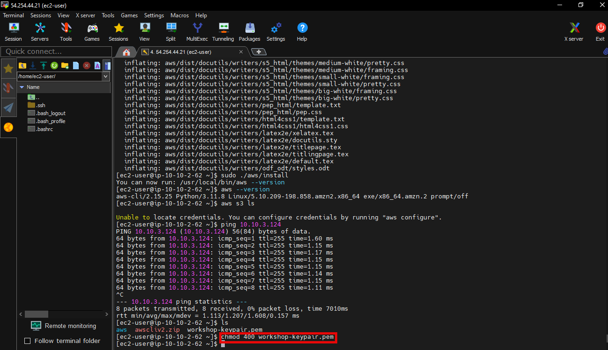
- SSH to EC2 private server
ssh -i workshop-keypair.pem ec2-user@<EC2 Private server's private IP address>
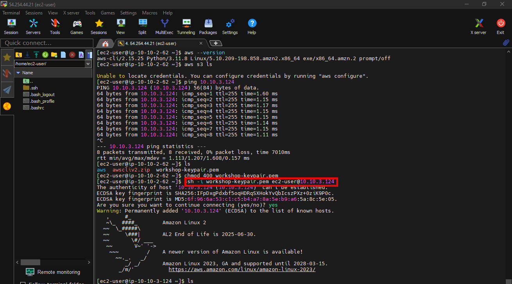
- Perform ping test to aws.amazon.com. As you can see, we cannot connect internet from EC2 Private. In the next step, we will create NAT Gateway to allow the EC2 Private server to connect to the internet in the outbound direction. Keep the connection to EC2 Private so that we can check the connection to internet after finishing creating and configuring NAT Gateway.
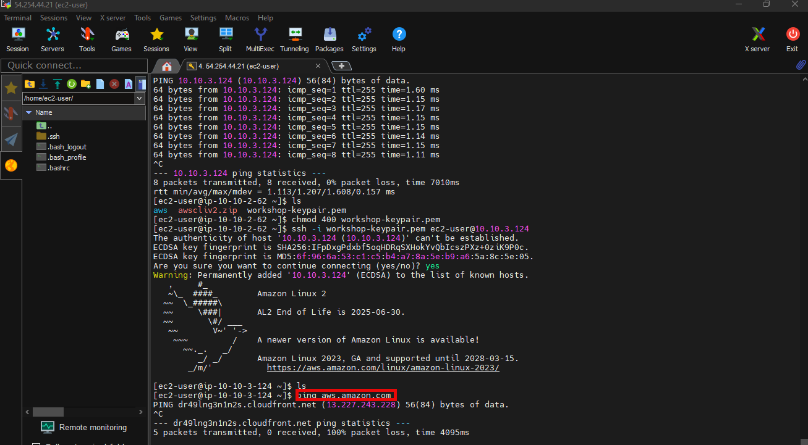